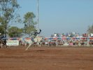
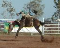
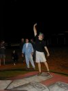
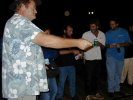

|
The day started of with a bit of stress. The homepage was still being updated right until the last minute before taking the 9.30 am shuttle bus into town.
Ready to update the homepage with tales from the past 12 days we went to the two places that provide internet access - both are closed on Sundays. We couldn't believe it!
Edlef went his way to get a bit of air and be for himself for a while and we, well, we didn't do all that much, other then sitting in a cafe and agreeing that if we wouldn't do anything else, the day would be pretty easy to write about ;-).
Usually we run into public holidays, festivals and the like whenever we come into a town. That's good if you're looking for entertainment, but bad if you want accommodation. Broome would have its Rodeo this weekend. The one Linda and I had seen in Normanton had apparently not satisfied our rodeo-appetite and Edlef hadn't seen any in Australia yet, so we hitchhiked out to the arena at 3 pm.

Horses, then Bulls, then horses again, followed by bulls and so on. Very entertaining to begin with, but it can get a bit boring after a while. Edlef decided to go home. Linda and I wanted to stay for the finales. Especially the bull-riding finale was worth waiting for - apparently the best and wildest bulls had been kept for desert. The rules say that the cowboy has to stay on the bull for eight seconds to score points. Many never scored any points at all. When a cowboy was thrown to the ground, the bull often made attempts to run 
him down. That's when the two "clowns" came into the picture. Their job is to distract the bulls attention so he goes for them instead of the cowboy that is lying on the ground. The guys that ride the bulls can't be to smart as they are risking their health and are not paid very well (first prize for this event was $1000) - the clowns however seem to have drawn an even shorter straw!
I had found out that there would be a game of two-ups after the rodeo and was determined to 
wait till the bitter end. I would take a while, as the floodlights broke down. It took almost an hour before everything was back to normal and the show could go on. By about 8.30 pm the rodeo was over. Impatiently I was waiting for the two-ups to be set up in the middle of the arena, but the organisers weren't in a hurry at all. We were freezing our butts off 
in our shorts and T-shirts (it gets quite cold at night). Finally by about 9 pm the gate was opened for the two-up. I was the first to enter the arena. Linda and a few others followed. But there weren't many people. Not enough for a good game. For a moment it sounded as if they were going to call it off, so I decided to go for the first spin. And from then on I was in luck. By 10.30 I had won $205 - not bad for a beginner, ey' ;-).


|
{kind=link}
{kind=link}
{kind=link}
{kind=link}